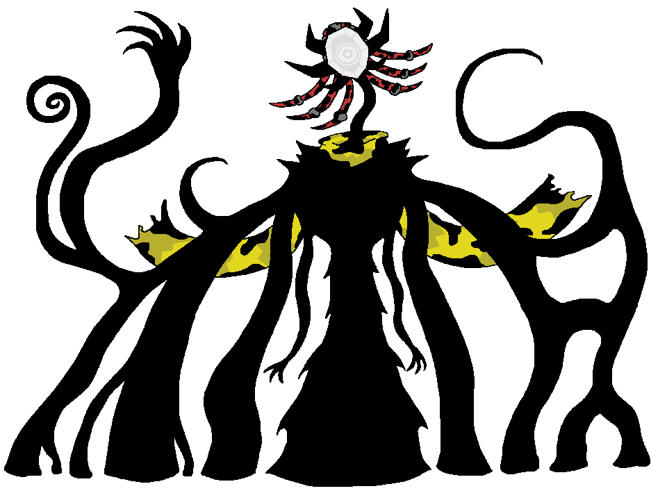
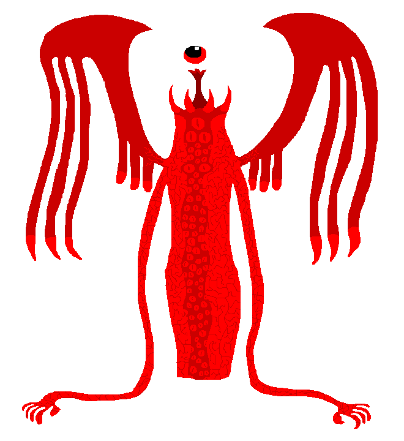
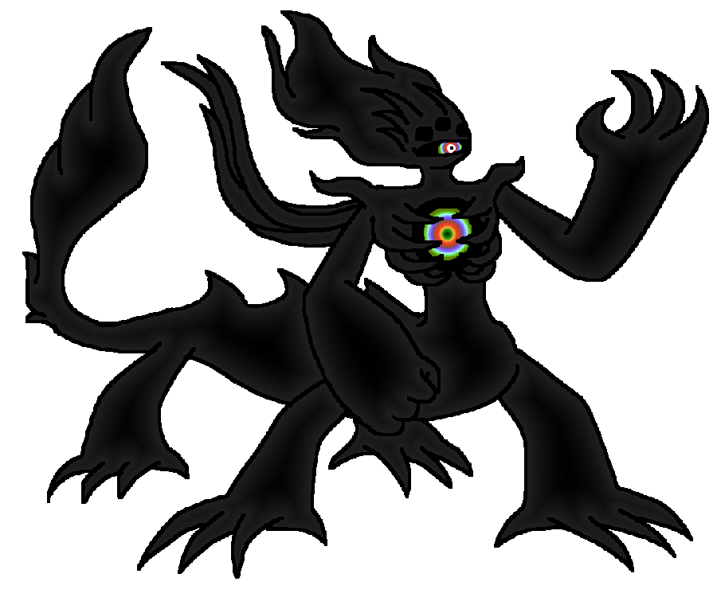
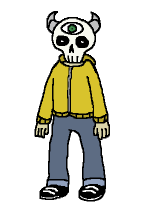
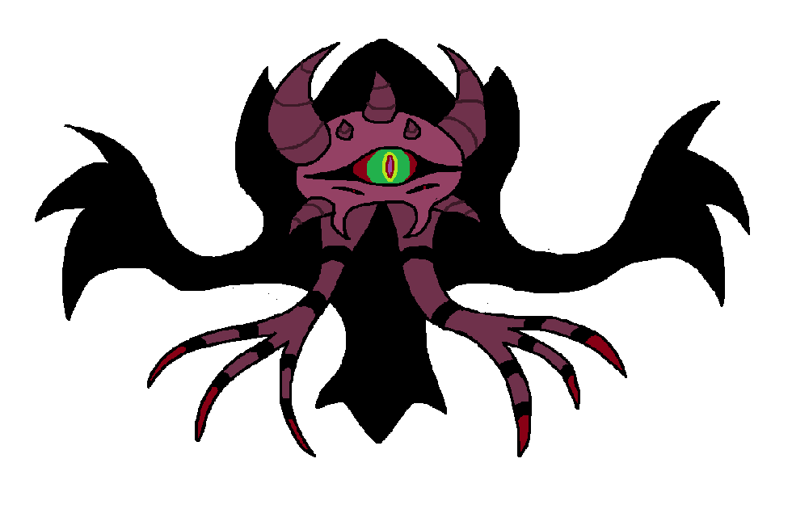

Here you will find some music and art I've made in the last few years that I am particularly proud of.
If you want to see any of the "games" that I've made, please check out my itch.io page instead!
The following images are drawings that I've made in GIMP over the last couple of years, most of which being eldritch creatures.
The Broken Shell  |
The Starved  |
Malazoth |
Remorga  |
Ember  |
I forgot what I called this lol  |
The following audio files contain original pieces of music that I have composed in the last few years. Go on and take a listen!
Solemn Fortress
Child of the Nebula
Penumbral Palace
Illicit Subsistence
Relics Beyond Comprehension ... (ft. Texilated)
Now that you've gone through some of my original stuff, here are a few remixes that I've made as well.
Castle Vein
Originally from ULTRAKILL
King Dedede
Originally from Kirby's Dream Land
Cold Spaghetti
Originally from Pizza Tower
Insanity
Originally from Wynncraft
Waltz with Despair
Originally from Wynncraft